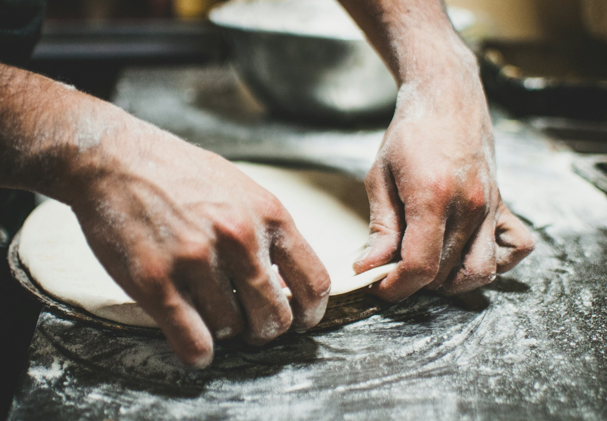
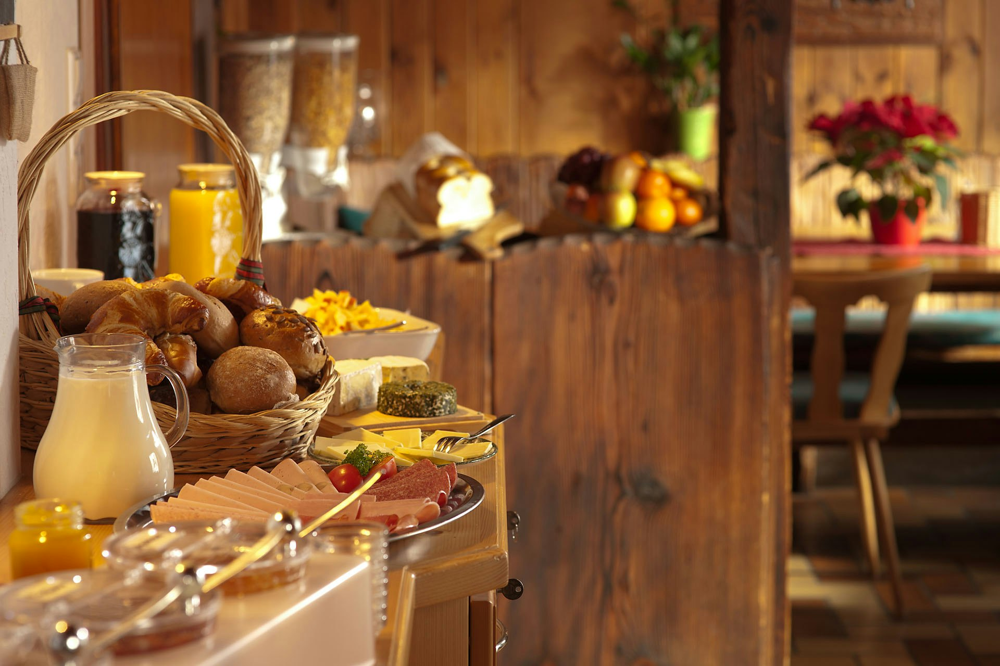
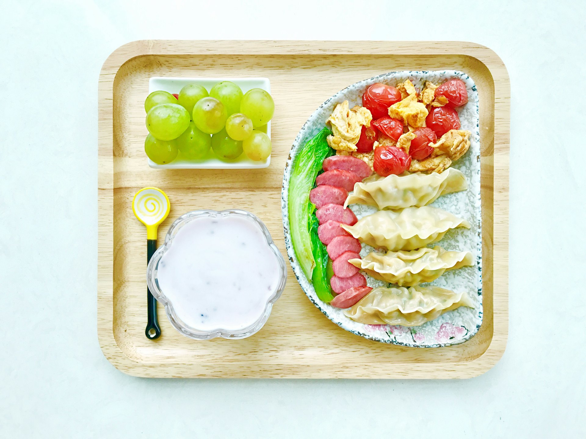
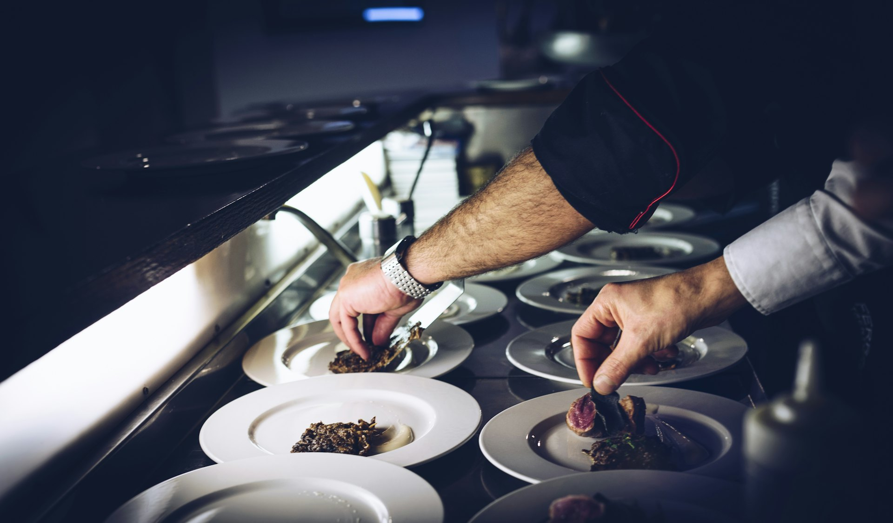
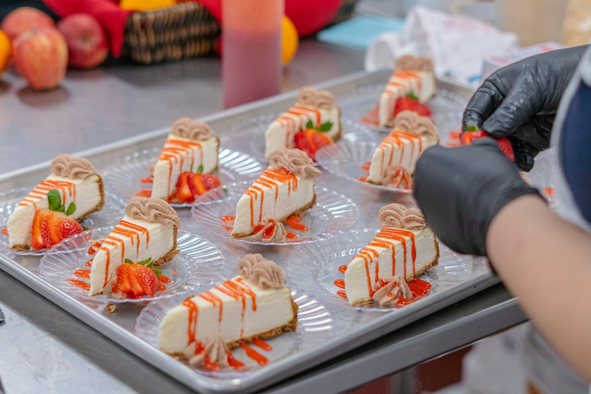
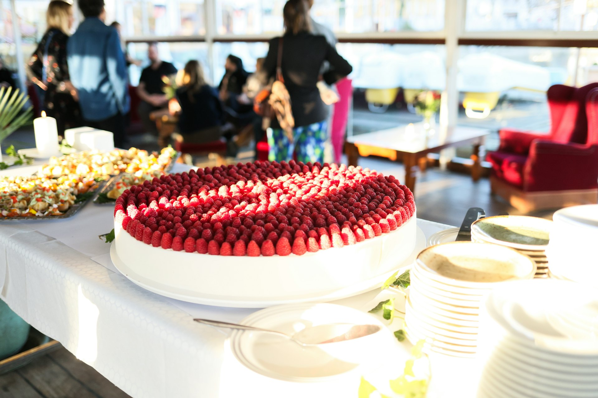

75LAB + Lactalis · Proposta de parceria
LactalisFood Service
Estratégia, estruturação e ativação para desenvolver o canal.
Do café da manhã do hotel à cozinha do hospital, da padaria ao distribuidor: cada ambiente pede uma resposta própria. Esta é uma proposta para construir essa resposta ao lado da Lactalis.
→ para começar





Cada ambiente pede
uma resposta própria.
01 O desafio atual
O Food Service está em construção. O desafio é conectar direção, ferramentas e presença.
O que ouvimos
Faltam materiais específicos para o canal
Catálogo desatualizado
Entrada de categorias e lançamentos a organizar
Canais e distribuidores a priorizar
Feiras, eventos e ativações a conectar
Prioridades por canal, categoria e perfil de cliente; jornada comercial e calendário que conecte lançamentos e oportunidades.
Apresentações, catálogos, argumentários, aplicações e conteúdo técnico para o time interno e os vendedores dos distribuidores.
O portfólio em experiências para visitas comerciais, distribuidores, contas estratégicas, feiras e eventos.
A pergunta que orienta a parceria
Como construir uma atuação Food Service consistente, conectando estratégia, ferramentas e execução conforme as prioridades do negócio?
Objetivo desta conversa: mostrar o potencial da parceria e alinhar as primeiras prioridades para contratação por projetos.
ABIA e Wise Sales, ID Food Service (set/2026) · ABIA OnePage 2026
02 Como a 75LAB pode apoiar
Da estratégia à execução, ao lado do time Lactalis.
Princípio da parceria
Uma base comum, aplicações específicas.
A direção Food Service se mantém. Argumentos, formatos e pontos de contato se adaptam a cada público e projeto.
Diagnóstico, prioridades por canal, jornadas comerciais, categorias e lançamentos.
Clareza sobre onde atuar e qual projeto priorizar.
Narrativa comercial, catálogo, apresentações, materiais de rota, argumentários e treinamento.
Ferramentas coerentes e usadas pelo time comercial.
Conceito, criação, produção e coordenação com distribuidores, contas, feiras e eventos.
Experiências alinhadas ao público, à ocasião e à execução.
Indicadores por projeto, leitura de resultados, ajustes e aprendizados documentados.
Modelos reaproveitáveis em novas categorias e canais.
03 Oportunidades por canal
Cada ambiente pede uma proposta própria, e a 75LAB já entregou essas competências.
Entrada de categoria, capacitação e suporte à recomendação comercial.
Exemplo de aplicação
Competência3 Corações · Plataforma de treinamento: capacitação digital da força de vendas.
Relacionar produtos à experiência de café da manhã e serviço.
Exemplo de aplicação
O café da manhã de hotel ganha espaço também como programa para quem não é hóspede (DGABC, 29/08/2026).
Competência3 Corações · Foodservice: material para o ponto de consumo.
Apoiar a avaliação técnica e a adequação à operação.
Exemplo de aplicação
Refeições coletivas: 40,5 mi de pessoas por dia (ABERC, via Jornal do Brás, 27/07/2026).
CompetênciaComunicação técnica: conteúdo validado pela Lactalis, em formato de consulta.
Mostrar aplicações e facilitar a avaliação do ingrediente.
Exemplo de aplicação
179 mil padarias e confeitarias, 14,5% do Food Service (Wise Sales e ABIA, 2025).
CompetênciaSeara · Ponta de gôndola: ativação de marca de alimentos, do conceito à produção.
Adaptar a proposta às necessidades e ao processo de compra de cada conta.
Exemplo de aplicação
CompetênciaLactalis · Displays especiais: projeto sob medida já entregue à Lactalis.
Exemplos com categorias citadas no briefing. Mix, benefícios e aplicações dependem de validação técnica e comercial da Lactalis. Cases: cliente · projeto · competência demonstrada (75lab.com.br/cases).
04 Projetos possíveis
Projetos modulares: cada um deixa ativos para o próximo.
Fica para a Lactalis: mapa de prioridades e um modelo de lançamento que se repete.
Fica para a Lactalis: uma biblioteca comercial usada pelo time e pelos distribuidores.
Fica para a Lactalis: formatos de ativação reaproveitáveis por público e ocasião.
Uma categoria prioritária combinando os três módulos.
Janela do piloto, a detalhar após validar cadastro, estoque e disponibilidade do distribuidor. Não é a duração da parceria.
Projetos são possibilidades para escolher juntos, não escopo contratado. O acompanhamento registra adesão, primeira compra e recompra conforme os dados disponíveis.
05 Contratação e próximos passos
Começar por uma prioridade e construir continuidade.
Contratação por projetos
Cada proposta defineEstruturação, desenvolvimento comercial ou ativação, conforme a prioridade.
Confirmar desafios, prioridades, responsáveis e o papel esperado da parceria.
Canais, categorias, materiais, feiras e eventos em um horizonte de 6 a 12 meses.
Por necessidade, impacto esperado, prontidão, prazo e investimento. A Bidfood é uma possibilidade.
Escopo, recursos, indicadores e cronograma detalhados; kick-off após aprovação.
Critério de sucesso desta conversa: sair com alinhamento sobre as frentes prioritárias e um encaminhamento concreto para detalhar o primeiro projeto.
Cada ambiente pede uma resposta própria. Vamos construir juntos a base que responde a todos.
Vanessa MorelliDiretora Comercial · 75LAB
A1 Contexto de mercado
O Food Service cresce acima do varejo, em mais de 1 milhão de pontos, quase todos pequenos.
vendidos pela indústria de alimentos ao Food Service em 2025: 28,3% do faturamento no mercado interno, contra R$ 260,9 bi em 2024.
Estabelecimentos por região · total 1.199.142
de crescimento do Food Service em 2025, acima do varejo (+8,4%).
dos estabelecimentos são de pequeno porte. Sem área de compras estruturada, a recomendação do vendedor pesa.
padarias e confeitarias, 14,5% do Food Service: um alvo natural para manteiga e leite condensado.
ABIA e Wise Sales, ID Food Service (abia.org.br, set/2026) · ABIA OnePage 2026 (mar/2026) · Giro News, 19/11/2025 e 16/10/2025 · leitura de implicação: 75LAB
A2 Concorrência · leitura das fontes públicas
A categoria já tem linhas "Profissional". Equipar quem vende no distribuidor segue como espaço livre.
Sites oficiais e imprensa de trade, consulta em 20/10/2026: nestleprofessional.com.br · Mercado & Consumo, 18/08/2024 e Jornal do Brás, 15/09/2026 (UFS) · polenghi.com.br/profissional · scala.com.br · Giro News 2018, 2020 e 23/01/2026 (Vigor) · tirolez.com.br/produtos/profissional · piracanjuba.com.br/produtos/food-service. "Não identificado" não significa que não exista.
A3 Shopper B2B · a decisão em cadeia
A venda acontece em cadeia: cada elo precisa do motivo certo para levar a recomendação adiante.
Leitura 75LAB a partir do briefing, da reunião de 16/09/2026 e da estrutura de compra dos distribuidores (ex.: portal myBidfood com pedido a qualquer hora e estoque em tempo real, mybidfood.com.br).
A4 Tendências com relação real ao desafio
O canal favorece quem chega com aplicação, praticidade e dado, não com catálogo longo.
Distribuidores e indústrias vendem por portal e app: pedido a qualquer hora, pedido rápido pelo histórico, estoque em tempo real.
Conteúdo da Lactalis onde o pedido acontece.
mybidfood.com.br · scala.com.br/b2b
93% dos empresários relatam dificuldade para contratar cozinheiro-chefe.
Treinamento e aplicações simples de reproduzir.
Abrasel, via Giro News, 19/03/2026
Bisnagas, baldes e porções ganham espaço; 29% dos negócios operam abaixo da margem de lucro.
Argumento de rendimento, porção e padronização.
Abrasel, via Giro News, 21/09/2026
91% dos consumidores se preocupam com desperdício; 78% dos operadores já agiram.
Conservação e uso correto como conteúdo técnico.
Barômetro Ticket, Mercado & Consumo, 26/03/2025
Hotéis abrem o café da manhã também para quem não é hóspede.
Iogurtes e manteiga como parte da experiência.
DGABC, 29/08/2026 · tendência qualitativa
Fispal Food Service, Equipotel, Hospitalar e APAS Show concentram decisores de cada público.
Presença com demonstração e continuidade após o evento.
Sites oficiais dos eventos, consulta em 20/10/2026
A5 Kit comercial · vista explodida
Uma narrativa-base, oito camadas: cada canal usa a combinação que precisa.
Arraste para girar · ilustração conceitual
Escolha um público
Todas as camadas nascem da mesma narrativa aprovada pela Lactalis. Cada público recebe a combinação que resolve a sua decisão.
Combinações sugeridas pela 75LAB a partir dos exemplos do briefing; formatos finais definidos no projeto de desenvolvimento comercial.
A6 Feiras e eventos · pontos de contato
Um evento vale pelo que acontece antes, durante e depois do stand.
- Público e objetivo por evento
- Convites a contas e distribuidores
- Agenda de encontros comerciais
- Mix e aplicações a demonstrar
- Stand modular e reaproveitável
- Demonstração e degustação orientada
- Encontros com compradores
- Registro de contatos e interesses
- Conteúdo pós-evento por público
- Retorno do vendedor às contas
- Kit de teste para quem demonstrou interesse
- Leitura de resultados do evento
Eventos a avaliar no mapa de oportunidades · horizonte de 6 a 12 meses
fispalfoodservice.com.br · equipotel.com.br · abhi.org.uk (Hospitalar 2027) · Giro News, 03/06/2026 (APAS) · Folha PE, 23/09/2026 (Mesa SP), consulta em 20/10/2026. FIPAN (panificação) ainda sem data 2027 confirmada pelo organizador.
A7 Exemplo prático · piloto Bidfood São Paulo
Uma categoria, um distribuidor, contas selecionadas: um piloto que ensina antes de escalar.
Mix definido junto à Lactalis, com cadastro e estoque validados no distribuidor.
Argumentário, lâmina de rota, ficha técnica e apresentação de lançamento.
Treinamento curto, com o argumento e as aplicações da categoria.
Poucos clientes por perfil (hotéis, padarias, restaurantes), escolhidos com o distribuidor.
Teste orientado, demonstração ou café da manhã, conforme a ocasião.
Adesão, primeira compra e recompra, conforme os dados disponíveis.
Antes de definir a janela
- Cadastro dos itens no distribuidor
- Estoque e disponibilidade
- Disponibilidade do time do distribuidor
- Tempo de decisão dos clientes
O que o piloto mede
Larguras ilustrativas da lógica do funil. Nenhum valor projetado.
Por que a Bidfood
- Irmãos Avelino, Mariusso e Vinhais (forte em laticínios), grupo Bidcorp
- Portal myBidfood: pedido a qualquer hora e estoque em tempo real
bidfood.com.br/quem-somos · mybidfood.com.br · Globalscope, 2021
A8 Cronograma · da conversa ao primeiro projeto
Seis marcos, cada um com uma decisão clara antes de seguir.
Desafios, prioridades e responsáveis.
CheckpointPrioridades validadas pela liderança
Lactalis75LAB
Canais, categorias, materiais, feiras e eventos.
EntregaMapa com horizonte de 6 a 12 meses
75LABLactalis
Necessidade, impacto, prontidão, prazo e investimento.
DecisãoProjeto escolhido
Lactalis
Escopo, recursos, indicadores e cronograma.
AprovaçãoProposta aprovada e kick-off
75LABLactalis
Desenvolvimento, produção e campo.
EntregaAtivos e ações do projeto
75LABDistribuidor
Leitura, ajustes e próximo projeto.
EntregaAprendizados e modelo replicável
75LABLactalis
A9 Plano de Rastreamento 75LAB
Cada ativo no campo vira evidência: uma foto na implantação, um filme durante o projeto.
One Shot
Confirma se o que foi planejado chegou ao lugar certo, do jeito certo.
Para: kits entregues a vendedores, materiais de mesa em contas, peças de demonstração.
On Timing
Acompanha o ativo enquanto ele circula: transporte, armazenagem, uso e saída.
Para: stands modulares que vão de feira em feira, displays em contas estratégicas, kits de evento.
*Conforme dados compartilhados pelo distribuidor, a acordar no escopo. Rastreio ao vivo só para ativos físicos que circulam ou permanecem no ponto; a tecnologia de cada projeto é definida na proposta.
A10 Fluxo de dados · rastreamento
Cada ativo gera um sinal. Cada sinal termina numa decisão.
Kit, stand, material de mesa ou demonstração com código único.
QR, foto, GPS, registro de visita, rastreador no ativo.
App de campo, link rastreável, sinal do rastreador.
Painel do projeto, simples e compartilhado.
Por conta, vendedor, evento e semana.
O que converte, onde trava, que argumento funciona.
Escalar, ajustar ou mudar o próximo projeto.
A11 Mensuração · resultados esperados
Sem histórico ainda não há meta: cada projeto começa definindo indicador, fonte, dono e frequência.
Sabemos onde atuar?
- Canais e categorias priorizados
- Calendário de oportunidades aprovado
- Modelo de lançamento definido
As ferramentas estão em uso?
- Vendedores capacitados
- Acessos ao catálogo e aos materiais
- Contas visitadas com o kit
A experiência gerou relação?
- Contas e operadores impactados
- Contatos qualificados por evento
- Testes e demonstrações realizados
Virou negócio e aprendizado?
- Adesão
- Primeira compra
- Recompra
- Modelos reaproveitados
A12 Benefícios conectados
Quando o vendedor ganha uma conversa melhor, todos os elos ganham junto.
- Uma voz Food Service consistente entre canais
- Portfólio traduzido por ocasião de uso
- Prioridades claras por canal
- Lançamentos com modelo replicável
- Categoria com plano de ativação
- Menos risco de cadastro sem giro
- Conversa curta, com argumento e aplicação
- Material atualizado à mão
- Teste com plano de uso, menos risco
- Experiência consistente no prato e na mesa
- Evidência de execução por ativo
- Decisão de escala com histórico
A13 Quem executa
Ideia boa é a que acontece: do plano ao ponto de contato, com a mesma equipe.
Estratégia, design e produção sob o mesmo teto.
75lab.com.br, home e cases (consulta em 20/10/2026)
A14 Contatos
Vamos construir o Food Service da Lactalis juntos.
75LAB
- Razão social
- 75LAB Estratégia, Design e Produção Ltda.
- CNPJ
- 55.470.982/0001-77
- Endereço
- [a preencher]
- Site
- 75lab.com.br
- contato@75lab.com.br
- Redes
- @setecincolab · LinkedIn
Apresentação
- Nome
- Vanessa Morelli
- Cargo
- Diretora Comercial
- vanessa.morelli@75lab.com.br
- Telefone
- (11) 98398-2803

 Proposta de parceria · Food Service
Proposta de parceria · Food ServiceOutubro de 2026